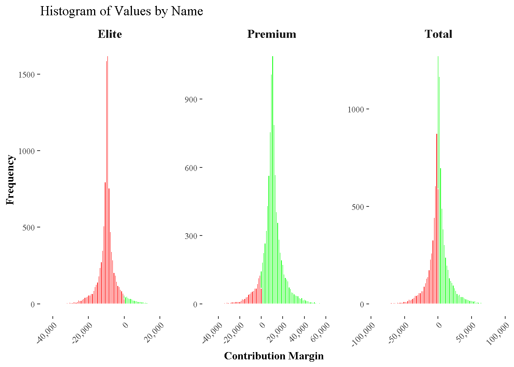

library(tidyverse)
library(openxlsx)
library(janitor)
library(scales)
library(tictoc)
library(furrr)
library(ggthemes)
library(gt)
library(fst)
library(future)
options(scipen = 999)
source("additional_functions.R")
sc <- scales::commaDay 1 - Building a Performance Measure Case
Introduction
Today’s complex business environment demands tools that offer both versatility and precision. In this session, we’ll explore three vital financial tasks using the R programming environment:
Cost Allocation: Get a granular understanding of how costs disperse across products, emphasizing the allocation of indirect costs.
Contribution Margin Analysis: Examine the profitability of individual products, distinguishing which products significantly impact the bottom line.
Monte-Carlo Analysis: Navigate business uncertainties with this statistical technique, utilizing random sampling to achieve numerical results for multifaceted problems.
But why opt for R over mainstream tools like Excel?
The Case for R:
Reproducibility: With R scripts, analyses can be reproduced and validated effortlessly. This is invaluable for audits or simply revisiting your work months or years later.
Handling Large Data sets: R is equipped to manage extensive datasets, something Excel struggles with beyond a point.
Flexibility: R’s vast array of packages and its ability to integrate with other languages and tools make it highly adaptable.
Advanced Statistical Analysis: While Excel offers basic statistical tools, R provides a comprehensive suite for sophisticated analyses.
Cost-Effective: Being open-source, R is freely available, ensuring businesses don’t incur additional software costs.
By the session’s end, you’ll appreciate not just the theoretical aspects of these techniques but also the practical advantages of implementing them in an open-source environment like R.
Let’s get started!
Loading Libraries
In this session, we’ll be leveraging various R libraries, each catering to specific tasks and functionalities. Here’s a breakdown of the libraries and their primary uses:
Data Manipulation and Visualization
tidyverse: A collection of packages tailored for data science.- Includes
dplyrfor data manipulation,ggplot2for data visualization,readrfor reading data, among others.
- Includes
janitor: Useful for cleaning data and performing some basic data wrangling tasks.
Data I/O
openxlsx: Specifically designed for reading from and writing to Excel sheets.
Numeric and Statistical Functions
scales: Aids in formatting numbers, especially for data visualization purposes.furrr: An offshoot of thepurrrpackage,furrrmakes it easy to apply functions in parallel.
Themes and Visualization Enhancements
ggthemes: Provides additional themes and scales forggplot2, enhancing the aesthetics and readability of plots.
Miscellaneous
tictoc: Helps in measuring the time taken for code execution, useful for performance tuning.
Custom Functions
source("additional_functions.R"): Loads user-defined functions from an external R script.
The Use Case


Cost Allocation
Task 1: Allocate Indirect Cost
We know that we have to allocate indirect costs onto the individual product. Let’s tale Material Cost as an example:
Direct Cost Elite (DC1): 30,000 €
Direct Cost Premium (DC2): 70,000 €
Indirect Cost (IC): 40,000
The general Formula for allocating indirect Cost is:
\[ IC_{c,i} = IC_{c}*\frac{DC_{c,i}}{\sum_{i} DC_i} \]
Task 1A: Material Cost Allocation Preparation
Use the given data to calculate the cost allocation:
mat_dic <- c("Elite" = 30000, "Premium" = 70000)
mat_inc <- 40000ToDo: Calculate the correct value for mat_ac
mat_alc <- NULL # YOUR CALCULATION HERE Elite Premium
12000 28000 Check Your Result
check_named_vector(mat_alc, c("Elite" = 12000, "Premium" = 28000))Success: Correct Values and NamesTask 1B: Write a general cost allocation formula
Ensure the function only accepts named numeric vectors.
Name conventions: .m_dic for the direct cost vector, and .s_inc for the indirect cost (m_ stands for multiple values and s_ stands for single values).
allocate_indirect_cost <- function(.m_dic, .s_inc) {
# YOUR CODE HERE
}mat_alc <- allocate_indirect_cost(mat_dic, mat_inc)Check Your Result
check_named_vector(mat_alc, c("Elite" = 12000, "Premium" = 28000))Success: Correct Values and NamesTask 2: Summing Cost Vectors
The goal here is to devise a formula that can take multiple named numeric vectors as its input and return a new vector whose elements are the piece-wise sum of the elements in the input vectors. This formula will allow you to combine, for example, direct costs and allocated indirect costs to derive the total costs.
Task 2A: Cost Summation Formula
You aim to create a function, sum_cost, that can receive any number of named numeric vectors and return their piece-wise sum.
The two common methods in R to handle an arbitrary number of function inputs are:
Using a list: Each vector is considered an item in the list. This method is more structured but requires each vector to be manually added to the list.
Using the
...operator: This is a placeholder for any number of arguments that can be passed to a function. It provides flexibility because you don’t have to specify in advance how many arguments you’re going to use. Later, inside the function, you can convert...to a list using thelist(...)function, allowing you to manipulate the arguments as a single list object.
Given these methods, here’s how you can create the sum_cost function:
sum_cost <- function(...) {
# YOUR CODE HERE
}mat_tot <- sum_cost(mat_dic, mat_inc )Check Your Result
check_named_vector(mat_tot, c("Elite" = 70000, "Premium" = 110000))Success: Correct Values and NamesTask 3: Using Real Data for Cost Allocation
To understand and compute the cost allocation using the lecture data, we’ll extract it from an Excel sheet and perform specific operations based on the data’s structure.
tab_cost <- tibble::as_tibble(
openxlsx::read.xlsx("../Business Case.xlsx", "Cost1")
) %>%
janitor::clean_names()
tab_cost# A tibble: 9 x 6
type product department amount distr range_std
<chr> <chr> <chr> <dbl> <chr> <dbl>
1 Direct Elite Material 30000 normal 5000
2 Direct Premium Material 70000 normal 7500
3 Indirect <NA> Material 40000 uniform 5000
4 Direct Elite Manufacturing 40000 normal 2500
5 Direct Premium Manufacturing 50000 normal 1500
6 Indirect <NA> Manufacturing 135000 uniform 25000
7 Indirect <NA> Admin 73000 uniform 7500
8 Indirect <NA> Marketing 36500 uniform 3750
9 Company <NA> <NA> 30000 uniform 22500Here, we use the openxlsx package to read the specific sheet “Cost1” from the Excel file. This data is then converted into a tibble (a modern form of R’s data frame) for easier manipulation. The clean_names() function from the janitor package is used to ensure our column names are consistent and easy to work with.
Task 3A: Writing a formula to read product cost
Objective: For this task, your goal is to write a function named filter_cost_input that filters the data for a specific cost type (e.g., Direct or Indirect) and a specific department (e.g., Material, Manufacturing). This function should return a named numeric vector where names are products, and values are the associated costs.
YOUR FUNCTION:
filter_cost_input <- function(.tab, .type, .dep) {
# YOUR CODE HERE
}Instructions:
Use the
filter()function from thedplyrpackage to filter the table based on the given cost type and department.After filtering, arrange the results based on the product name. This will ensure consistency in later steps.
Now, you’ll need to generate a named vector from the filtered results. This can be achieved using the
mutate()function to set the names of theamountcolumn to be the respective product names.Finally, extract just the named
amountvector using thepull()function.
Check Your Result
mat_dic <- filter_cost_input(tab_cost, "Direct", "Material")
mat_dic Elite Premium
30000 70000 check_named_vector(mat_dic, c("Elite" = 30000, "Premium" = 70000))Success: Correct Values and NamesTask 3B: Writing formulas to get Cost Allocation List
Objective: The aim of this exercise is to calculate different types of costs, both direct and indirect, and allocate them properly across products.
Step-by-Step Guide:
Understand the Structure: The
get_cost_allocationsfunction will compute various costs and store them in a list. This list will help organize and categorize costs according to their type and department.Material Costs:
Direct Material Cost (
mat_dic): This is already computed for you using thefilter_cost_inputfunction. It represents the costs directly linked to materials for each product.Indirect Material Cost (
mat_inc): These costs are associated with materials but can’t be linked to a specific product. Instead, they’re spread out across all products.Allocated Material Cost (
mat_alc): Here, you need to allocate the indirect material cost across all products based on some allocation rule (like proportion of direct costs or units produced). Use theallocate_indirect_costfunction withmat_dicandmat_incas arguments.Total Material Cost (
mat_tot): This is the sum of direct material cost and allocated indirect material cost. Use thesum_costfunction.
Manufacturing Costs:
Direct Manufacturing Cost (
man_dic) and Indirect Manufacturing Cost (man_inc): These are computed in a manner similar to material costs.Allocated Manufacturing Cost (
man_alc): Allocate the indirect manufacturing cost across products. Consider factors like machine hours or labor hours if relevant.Total Manufacturing Cost (
man_tot): Sum up the direct and allocated indirect manufacturing costs.
Administrative Costs:
Indirect Admin Cost (
adm_inc): As administrative costs are often indirect, allocate these across products based on a suitable allocation base (e.g., total costs or sales).Allocated Admin Cost (
adm_alc): Spread the indirect admin cost using an appropriate rule.
Marketing Costs:
Indirect Marketing Cost (
mar_inc): These are the costs associated with marketing activities that can’t be directly linked to a product.Allocated Marketing Cost (
mar_alc): Distribute the marketing costs among products.
Total Product Cost (
prd_tot): This is a summation of all costs associated with a product - material, manufacturing, administrative, and marketing. Ensure all costs are considered, both direct and allocated indirect.
Use the Functions allocate_indirect_cost() and sum_cost() to complete the get_cost_allocations() functions
YOUR FUNCTION:
get_cost_allocations <- function(.tab_cost) {
# Create an empty list to store values
lst_ <- list()
# Material Cost
lst_[["mat_dic"]] <- filter_cost_input(.tab_cost, "Direct", "Material") # Direct Material Cost
lst_[["mat_inc"]] <- filter_cost_input(.tab_cost, "Indirect", "Material") # Indirect Material Cost
lst_[["mat_alc"]] <- NULL # YOUR CODE HERE # Allocated Material Cost
lst_[["mat_tot"]] <- NULL # YOUR CODE HERE # Total Material Cost
# Manufacturing Cost
lst_[["man_dic"]] <- filter_cost_input(.tab_cost, "Direct", "Manufacturing") # Direct Manufacturing Cost
lst_[["man_inc"]] <- filter_cost_input(.tab_cost, "Indirect", "Manufacturing") # Indirect Manufacturing Cost
lst_[["man_alc"]] <- NULL # YOUR CODE HERE # Allocated Manufacturing Cost
lst_[["man_tot"]] <- NULL # YOUR CODE HERE # Total Manufacturing Cost
# Administrative Cost
lst_[["adm_inc"]] <- filter_cost_input(.tab_cost, "Indirect", "Admin") # Indirect Admin Cost
lst_[["adm_alc"]] <- NULL # YOUR CODE HERE # Allocated Admin Cost
# Marketing Cost
lst_[["mar_inc"]] <- filter_cost_input(.tab_cost, "Indirect", "Marketing") # Indirect Marketing Cost
lst_[["mar_alc"]] <- NULL # YOUR CODE HERE # Allocated Marketing Cost
# Total Product Cost
lst_[["prd_tot"]] <- NULL # YOUR CODE HERE
return(lst_)
}Function Breakdown:
Function Name:
get_cost_allocation_skeleton- This name suggests that we are fetching or creating a foundational structure for our cost allocations.
The
tibble::tribbleFunction:This function is from the
tibblepackage and helps in creating a small table (or tibble) in a readable form.The
~signand~varare column names in this table. Each subsequent line in the function provides a row of data for these columns.
Usage:
When you call the function, it returns the described tibble structure. This “skeleton” serves as a roadmap for allocating and tallying up various costs. As you proceed with the exercise, you will populate this table with actual monetary values corresponding to each cost type. This visual representation helps in comprehending the flow and accumulation of different cost components.
get_cost_allocation_skeleton <- function() {
tibble::tribble(
~sign, ~var,
" ", "Direct Material Costs",
"+", "Indirect Material Costs",
"=", "Material Costs",
"+", "Direct Manufacturing Costs",
"+", "Indirect Manufacturing Costs",
"=", "Manufacturing Costs",
"+", "Indirect Administration Costs",
"+", "Indirect Marketing Costs",
"=", "Total Product Costs"
)
}get_cost_allocation_skeleton()# A tibble: 9 x 2
sign var
<chr> <chr>
1 " " Direct Material Costs
2 "+" Indirect Material Costs
3 "=" Material Costs
4 "+" Direct Manufacturing Costs
5 "+" Indirect Manufacturing Costs
6 "=" Manufacturing Costs
7 "+" Indirect Administration Costs
8 "+" Indirect Marketing Costs
9 "=" Total Product Costs Task 3C: Display Cost Allocation Table
In this task, your goal is to use the pre-defined functions get_cost_allocation_list() and get_cost_allocation_skeleton() to construct the final Cost Allocation Table.
The Cost Allocation Table is crucial because it breaks down both direct and indirect costs, allowing a company to understand its cost structure better. By the end of this task, you should be able to represent all these costs in a well-organized table.
Instructions:
Understanding the Skeleton:
Before jumping into building the entire table, let’s familiarize ourselves with the
get_cost_allocation_skeleton()function. This function provides a structured, step-by-step representation of how costs are compiled. Each row of the output represents either an individual cost or a summation.Try running the function by itself to see its output!
Fetching the Costs:
The
get_cost_allocation_list()function is designed to extract various types of costs from the dataset. It returns a list containing costs categorized by their type (direct, indirect) and nature (material, manufacturing, etc.).For the purpose of this task, run the function with your dataset and examine its output. Familiarize yourself with the different types of costs it provides.
Building the Table:
Your main challenge is to construct the Cost Allocation Table. This will involve integrating the structure provided by the skeleton with the actual cost data.
Think of how you can combine the structured format of the skeleton with the actual cost numbers. You’ll need to fetch each relevant cost from the list and place it in the correct position within the table.
Note: The skeleton uses signs like “+” and “=” to signify addition and summation. This can guide you on where and how to place and calculate costs.
Steps to Consider for the Function:
Start by fetching the costs using
get_cost_allocation_list().Use the output of
get_cost_allocation_skeleton()as your foundational table.For each line in the skeleton, fetch the corresponding cost from your list and append it as a new column to the table.
Once you’ve placed all the individual costs, think about the rows that require summation (those with “=”). Calculate these using the appropriate rows.
Continue this process until you’ve constructed the entire table.
Add a Total Column to the Table that shows the total cost over all Products
Testing:
- Once you’ve written your function, test it with the given data. Your output should align with the structure of the skeleton and display all the relevant costs.
Tips:
Remember, you’re not starting from scratch! You have a structured format and categorized data. It’s all about bringing them together in the right order.
The use of functions from packages like
dplyrandpurrrcan significantly simplify data manipulation and transformation. If you’re familiar with these, consider how they can assist in your task.
get_cost_allocation_table <- function(.tab_cost) {
# YOUR CODE HERE
}get_cost_allocation_table(.tab_cost = tab_cost)# A tibble: 9 x 5
sign var Total Elite Premium
<chr> <chr> <dbl> <dbl> <dbl>
1 " " Direct Material Costs 100000 30000 70000
2 "+" Indirect Material Costs 40000 12000 28000
3 "=" Material Costs 140000 42000 98000
4 "+" Direct Manufacturing Costs 90000 40000 50000
5 "+" Indirect Manufacturing Costs 135000 60000 75000
6 "=" Manufacturing Costs 365000 142000 223000
7 "+" Indirect Administration Costs 73000 28400 44600
8 "+" Indirect Marketing Costs 36500 14200 22300
9 "=" Total Product Costs 474500 184600 289900format_table(get_cost_allocation_table(tab_cost))| sign | var | Total | Elite | Premium |
|---|---|---|---|---|
| Direct Material Costs | 100,000 | 30,000 | 70,000 | |
| + | Indirect Material Costs | 40,000 | 12,000 | 28,000 |
| = | Material Costs | 140,000 | 42,000 | 98,000 |
| + | Direct Manufacturing Costs | 90,000 | 40,000 | 50,000 |
| + | Indirect Manufacturing Costs | 135,000 | 60,000 | 75,000 |
| = | Manufacturing Costs | 365,000 | 142,000 | 223,000 |
| + | Indirect Administration Costs | 73,000 | 28,400 | 44,600 |
| + | Indirect Marketing Costs | 36,500 | 14,200 | 22,300 |
| = | Total Product Costs | 474,500 | 184,600 | 289,900 |
Contribution Margin
Having the cost allocation ready, we no focus on performance measures, namely the contribution margin. Looking at the Contribution margin table we see that we now need another function, namely where we have one positive input value (e.g. revenue) and subtract a cost element (e.g. Variable Cost)
tab_revenue <- tibble::as_tibble(
openxlsx::read.xlsx("../Business Case.xlsx", "Revenue1")
) %>%
janitor::clean_names()
tab_revenue# A tibble: 2 x 6
product units price amount distr range_std
<chr> <dbl> <dbl> <dbl> <chr> <dbl>
1 Elite 500 350 175000 normal 25000
2 Premium 500 600 300000 normal 30000Task 4A: Subtracting Cost Vectors for Revenue Vectors
You aim to create a function, substract_cost, that can receive any number of named numeric vectors and subtract values from the first value.
The two common methods in R to handle an arbitrary number of function inputs are:
Using a list: Each vector is considered an item in the list. This method is more structured but requires each vector to be manually added to the list.
Using the
...operator: This is a placeholder for any number of arguments that can be passed to a function. It provides flexibility because you don’t have to specify in advance how many arguments you’re going to use. Later, inside the function, you can convert...to a list using thelist(...)function, allowing you to manipulate the arguments as a single list object.
Given these methods, here’s how you can create the substract_cost function:
subtract_cost <- function(...) {
# YOUR CODE HERE
}Check Your Result
revenues <- c("Elite" = 100000, "Premium" = 250000)
var_cost <- c("Elite" = 70000, "Premium" = 120000)
cm1 <- subtract_cost(revenues, var_cost)check_named_vector(cm1, c("Elite" = 30000, "Premium" = 130000))Success: Correct Values and NamesTask 4B: Writing a formula to read product revenues
Objective: For this task, your goal is to write a function named filter_revenue_input This function should return a named numeric vector where names are products, and values are the associated costs.
YOUR FUNCTION:
filter_revenue_input <- function(.tab, .type, .dep) {
# YOUR CODE HERE
}filter_revenue_input(tab_revenue) Elite Premium
175000 300000 Task 4C: Writing formulas to get Contribution Margin List
Remember Task 3B. Use the Functions subtract_cost() and sum_cost() to complete the get_cost_allocations_and_list() function.
get_cost_allocation_and_cm_list <- function(.tab_cost, .tab_revenue) {
lst_cost_ <- get_cost_allocation_list(.tab_cost) # The Cost Allocation List
lst_cm_ <- list() # A new List for Contribution Margin
lst_cm_[["revenues"]] <- filter_revenue_input(.tab_revenue) # Revenues
lst_cm_[["var_cost"]] <- NULL # YOUR CODE HERE
lst_cm_[["cm1"]] <- NULL # YOUR CODE HERE
lst_cm_[["fix_cost"]] <- NULL # YOUR CODE HERE
lst_cm_[["cm2"]] <- NULL # YOUR CODE HERE
return(c(lst_cost_, lst_cm_)) # Return the combined list
}Task 4D: Display Contribution Margin Table
Remember Task 3C.
get_contribution_margin_skeleton <- function() {
tibble::tribble(
~sign, ~var,
" ", "Revenue",
"-", "Variable Cost",
"=", "Contribution Margin 1",
"-", "Product Fix Cost",
"=", "Contribution Margin 2",
)
}make_cm_table <- function(.tab_cost, .tab_revenue) {
# YOUR CODE HERE
}format_table(make_cm_table(tab_cost, tab_revenue))| sign | var | Total | Elite | Premium |
|---|---|---|---|---|
| Revenue | 475,000 | 175,000 | 300,000 | |
| - | Variable Cost | 190,000 | 70,000 | 120,000 |
| = | Contribution Margin 1 | 285,000 | 105,000 | 180,000 |
| - | Product Fix Cost | 284,500 | 114,600 | 169,900 |
| = | Contribution Margin 2 | 500 | (9,600) | 10,100 |
Monte Carlo Analysis
Introduction:
Monte Carlo Analysis is a powerful statistical technique that allows you to account for uncertainty in your decision-making processes. It allows you to model possible outcomes by randomizing specific inputs according to predefined distributions. This approach is named after the city of Monte Carlo, known for its casinos, suggesting the element of chance or randomness.
In our context, we’ll be performing a Monte Carlo Analysis to simulate the effects of various inputs on our outcome variable: the contribution margin. This is a critical tool in finance and business strategy, allowing for a deeper understanding of potential variability in key metrics.
Description:
Randomizing Input:
The
randomize_inputfunction allows us to randomize a given input based on either a normal or uniform distribution. The randomness is controlled by the seed, ensuring reproducibility..distr: The distribution type. Can be either “normal” or “uniform”..mean: The central tendency of your distribution..bound: For the normal distribution, it’s the standard deviation. For the uniform distribution, it’s the range around the mean..seed: Seed for reproducibility.
Randomizing Input Table:
The
randomize_input_tablefunction is an extension of therandomize_inputfunction but applies the randomness over an entire table..tab: The table you want to randomize..seed: Seed for reproducibility.
Test Random Functions:
- In the given scripts, there’s a small test showing how to randomize inputs for both single values and entire tables.
Contribution Margin Table:
- The
make_cm_tablefunction computes the contribution margin table by randomizing the cost and revenue tables.
- The
Running Monte Carlo Simulation:
Monte Carlo Simulations involve repeating the randomization process multiple times and observing the resulting outcomes.
We use the
purrr::mapfunction to run theget_cost_allocation_and_cmfunction multiple times.The simulation is repeated 100 times, with a different seed each time to ensure variability.
We use the
tictocpackage to measure how long the entire simulation process takes. This can be useful to understand the computational complexity.
Parallel Processing:
To speed up the Monte Carlo simulations, we leverage the power of parallel processing. This means that multiple computations run simultaneously.
future::availableCores(): Determines the number of available processing cores.furrr::future_map: A function from thefurrrpackage that allows for parallel processing. This drastically reduces the time needed for simulations when you have multiple cores available.
Visualization:
Once the simulation is done, it’s time to visualize the outcomes.
- The
display_histogramfunction is used to provide a histogram of the contribution margin’s possible values. This gives a visual representation of the most likely values, the variability, and the possible range of the contribution margin.
- The
Key Takeaways:
Monte Carlo Analysis helps in understanding the potential range and variability of financial outcomes.
It emphasizes not only focusing on the most likely outcome but also considering a range of possible outcomes.
Parallel processing can speed up the process significantly, especially when dealing with a large number of simulations.
Visualization tools, such as histograms, offer a succinct way to interpret the results of Monte Carlo Analysis.
Remember, while Monte Carlo Analysis provides a range of outcomes, it doesn’t predict the future. Instead, it offers a probabilistic view of potential outcomes based on the variability of the inputs. It’s an essential tool for risk analysis, helping businesses prepare for a range of scenarios.
randomize_input <- function(.distr, .mean, .bound, .seed) {
set.seed(.seed)
if (.distr == "normal") {
rnorm(1, .mean, .bound)
} else if (.distr == "uniform") {
runif(1, .mean - .bound, .mean + .bound)
} else {
stop("Wrong Distribution Specified")
}
}
randomize_input_table <- function(.tab, .seed) {
.tab %>%
dplyr::mutate(
amount = purrr::pmap_dbl(
.l = list(distr, amount, range_std),
.f = ~ randomize_input(..1, ..2, ..3, .seed)
)) %>%
dplyr::mutate(amount = purrr::set_names(amount, product))
}
randomize_input(tab_cost$distr[1], tab_cost$amount[1], tab_cost$range_std[1], 1)[1] 26867.73randomize_input_table(.tab = tab_revenue, 2)# A tibble: 2 x 6
product units price amount distr range_std
<chr> <dbl> <dbl> <dbl> <chr> <dbl>
1 Elite 500 350 152577. normal 25000
2 Premium 500 600 273093. normal 30000make_cm_table(
.tab_cost = randomize_input_table(tab_cost, 2),
.tab_revenue = randomize_input_table(tab_revenue, 2)
) %>% format_table()| sign | var | Total | Elite | Premium |
|---|---|---|---|---|
| Revenue | 425,670 | 152,577 | 273,093 | |
| - | Variable Cost | 175,201 | 63,273 | 111,928 |
| = | Contribution Margin 1 | 250,469 | 89,304 | 161,165 |
| - | Product Fix Cost | 258,503 | 101,632 | 156,871 |
| = | Contribution Margin 2 | (8,034) | (12,328) | 4,294 |
tictoc::tic()
lst_monte_carlo <- purrr::map(
.x = 1:100,
.f = ~ get_cost_allocation_and_cm_list(
.tab_cost = randomize_input_table(tab_cost, .x),
.tab_revenue = randomize_input_table(tab_revenue, .x)
), .progress = TRUE
) =============================>- 98% | ETA: 0stictoc::toc()3.86 sec elapsedcores <- min(20, future::availableCores() - 1)
tictoc::tic()
future::plan("multisession", workers = cores)
lst_monte_carlo <- furrr::future_map(
.x = 1:10000,
.f = ~ get_cost_allocation_and_cm_list(
.tab_cost = randomize_input_table(tab_cost, .x),
.tab_revenue = randomize_input_table(tab_revenue, .x)
),
.progress = TRUE,
.options = furrr::furrr_options(seed = TRUE)
)
future::plan("default")
tictoc::toc()28.09 sec elapsedlst_monte_carlo_transposed <- purrr::transpose(lst_monte_carlo)
display_histogram(.lst = lst_monte_carlo_transposed$cm2)